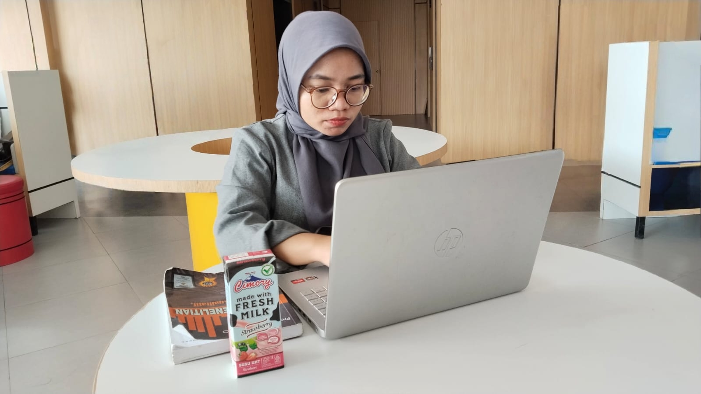
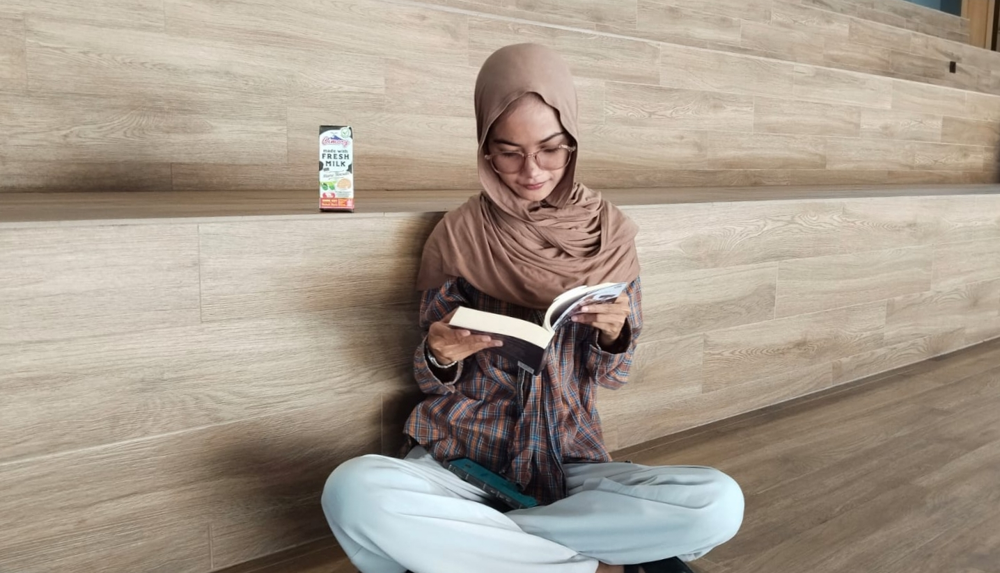
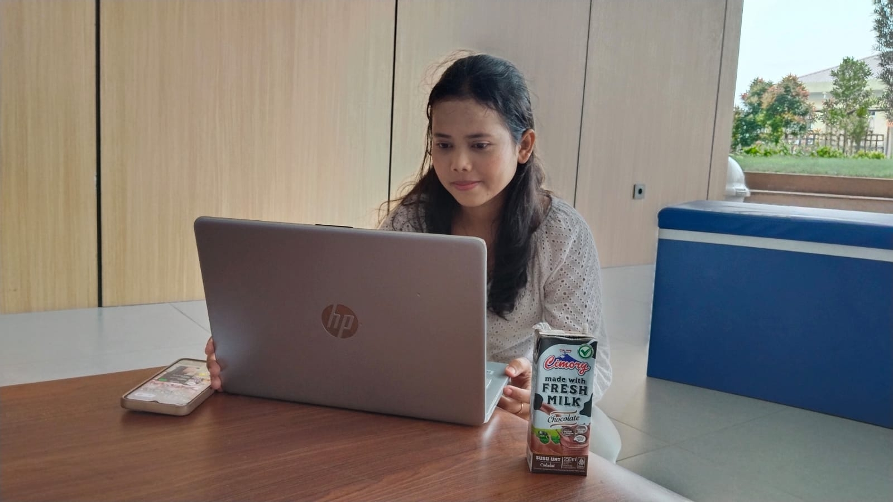
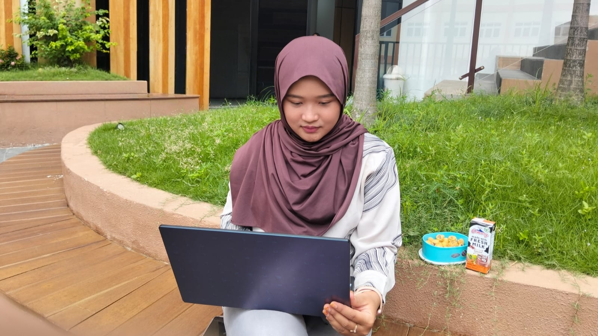
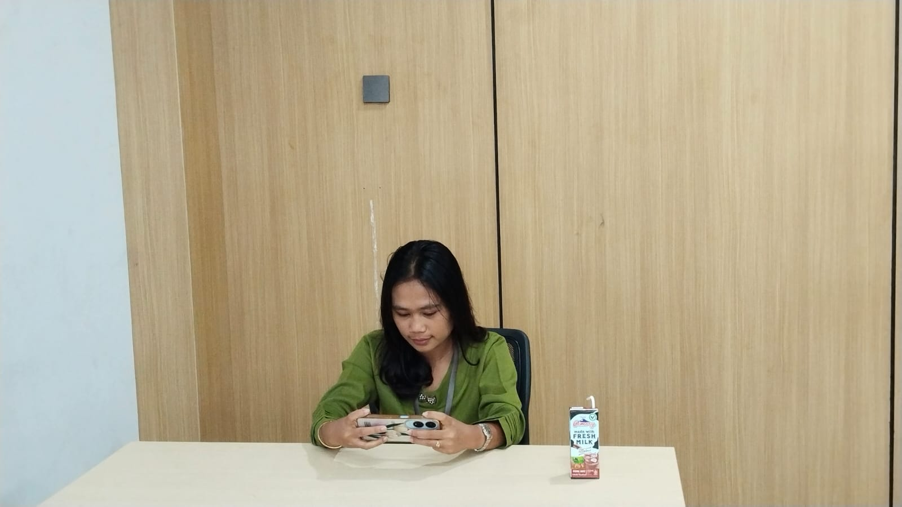
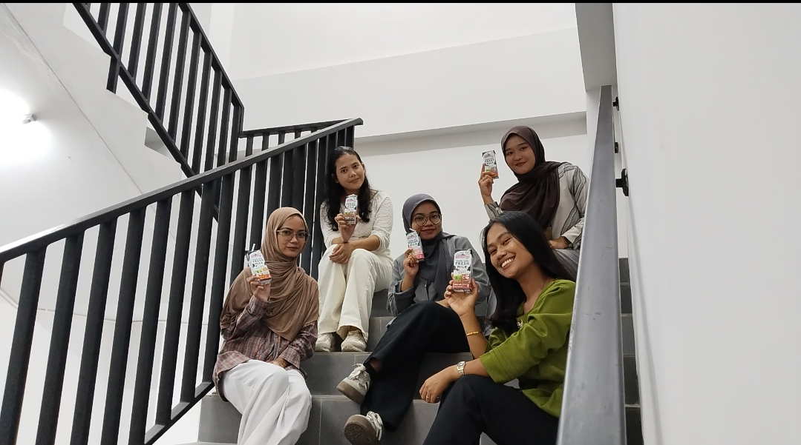
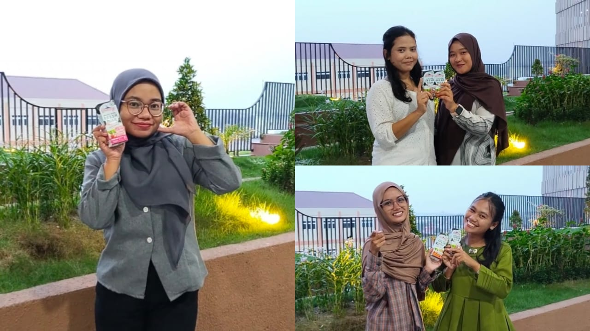

1
Susi – Ngerjain Tugas
(0:00–0:20)

Semangat kuliah,
dengan Cimory!
Visual: Susi mengerjakan tugas di kampus.
Dialog: “duh sulit banget ya, tugas numpuk, deadline mepet, butuh yang bikin semangat balik nih. oh ya kan ada cimory yang jadi pilihan enak dan praktis nih”
2
Intan – Baca Buku
(0:20–0:40)

Baca lebih seru,
dengan Cimory ♡
Visual: Intan membaca novel di tangga santai kampus.
Dialog: “wow ceritanya seru banget, 1000 per 10 ini mah, wajib masuk list buku favorit aku nih, baca buku seru, enaknya ditemani cimory favorit aku, hmm”
3
Grace – Nonton Film
(0:40–1:00)

Teman Nonton,
Teman Seru!
Visual: Grace menonton film sambil minum Cimory.
Dialog: “wah filmnya menarik ya, nanti aku rekomendasikan sama teman aku deh, nonton-nonton gini enaknya sambil minum cimory”
4
Nadya – Nonton Drama
(1:00–1:20)

Santai Nontonnya,
Enak Minumnya ♡
Visual: Nadya menonton drama sambil menikmati waktu santai.
Dialog: “duh dramanya buat sedih, tapi alurnya juga bagus, untung aja ditemani dengan cemilan, dan juga tentunya susu cimory, buat momen nonton aku jadi lebih santai dan juga menyenangkan, lanjut nonton lagi”
5
Nikita – Main Game
(1:20–1:40)

Main Lebih Fokus,
dengan Cimory!
Visual: Nikita bermain game menggunakan ponsel.
Dialog: “ah level up susah banget sih, tapi game-nya seru, hmm, eh, minum cimory aja menaikkan mood dan nambah energi main game”
6
Titik Temu
(1:40–2:10)

Jalur berbeda,
tujuan yang sama ♡
Visual: Keempat anggota berjalan dari arah berbeda.
Dialog:
Intan: “eh nggak nyangka ya bakal ketemu kalian bareng-bareng gini”
Grace: “iya mana sama-sama pegang cimory lagi”
Nadya: “iya soalnya cimory susu kesukaanku”
Nikita: “iya aku juga, favorit kita-kita nih”
Intan: “eh susi ngechat nih, dia di taman, yuk nyusul”
Nikita: “yuk lets go”
7
Taman Seru
(2:10–2:30)

Ketemu
di Taman!
Visual: Kelima anggota bertemu di taman kampus.
Dialog:
Nadya: “hai sus, fokus banget”
Grace: “fokus-fokus gitu minumnya tetap cimory tuh”
Susi: “ya gimana dong, cimory favorit aku sih”
Nikita: “ya selain kegiatan kita berbeda-beda, minuman kita tetap sama ya”
Intan: “tentu aja, karena selain enak, cimory itu mengandung protein, vitamin, dan kalsium yang bagus untuk tubuh loh. selain itu cimory memiliki berbagai rasa yang bisa kamu coba dan kamu pilih sesuai rasa kesukaan kamu”
Nadya: “tentu saja, variannya ada mulai dari coklat, strawberry, vanila, matcha, dan juga banyak varian lainnya, yang dijamin nggak bakal bosan”
Grace: “iya tuh, aku udah buat jadwal dari hari senin sampai hari minggu, untuk minum cimory, dan yang favoritku itu rasa coklat, yang coklatnya bikin pas dan tidak bikin bosan”
Susi: “jadi tunggu apa lagi, yuk coba sekarang cimory dan temukan rasa favoritmu”
Intan: “kamu bisa mendapatkan produk cimory di minimarket, supermarket, atau toko lainnya yang menjual produk cimory, jadi jangan sampai ketinggalan untuk mencobanya ya”
8
Ngumpul & Cerita
(2:30–2:50)

Beda kegiatan,
satu kesegaran!
Visual: Kelima anggota duduk bersama, minum Cimory sambil bercerita.
Dialog: Bercerita sambil tersenyum dan tertawa.
9
Closing
(2:50–3:00)

Cimory
Rasa yang selalu menemani ♡
Visual: Kelima anggota berdiri memegang produk Cimory dan menghadap kamera.
Dialog:
Susi: “Cimory!”
Nadya dan Grace: “Teman baik!”
Intan dan Nikita: “Temani momenmu!”